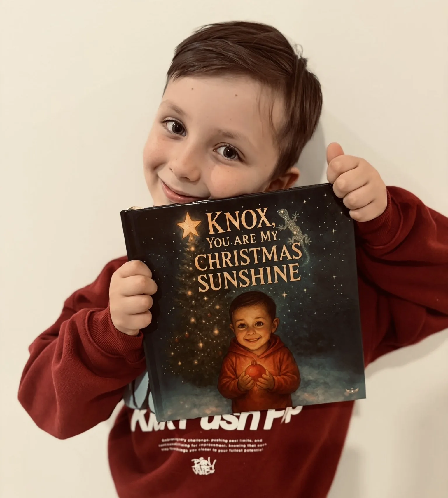
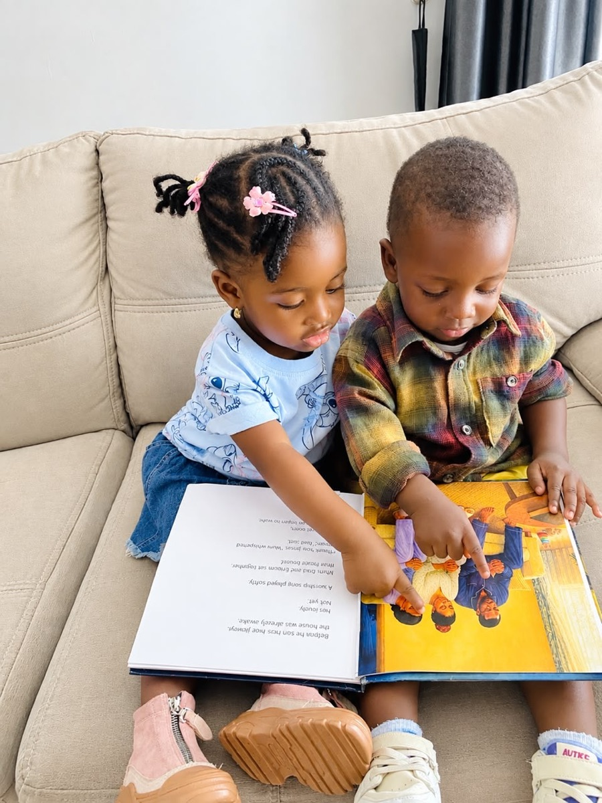
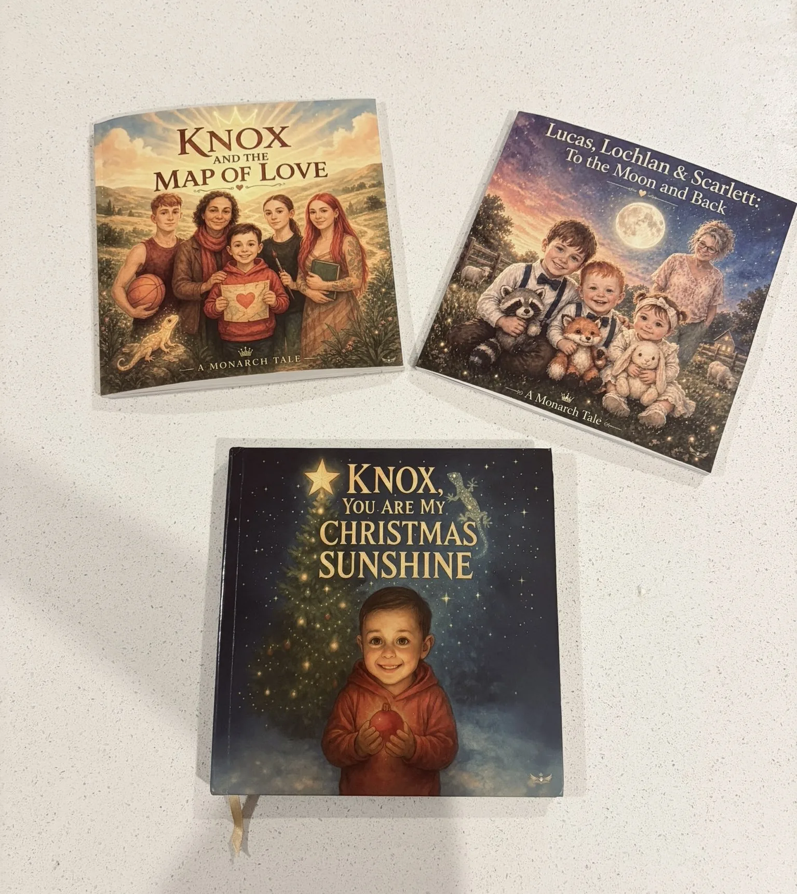
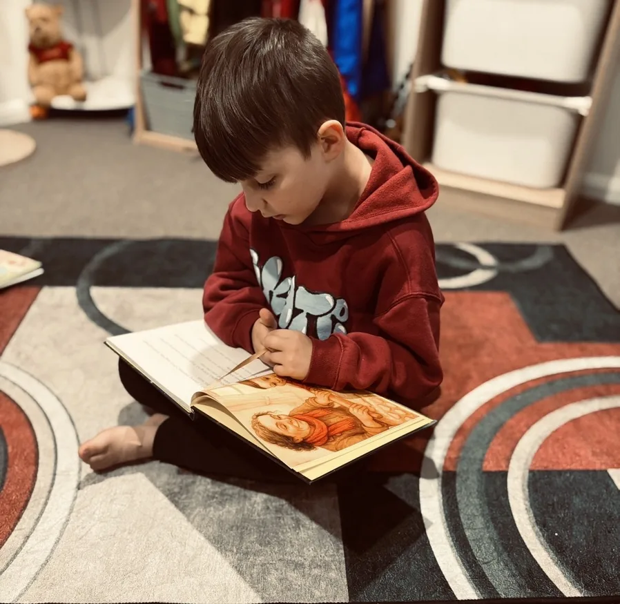
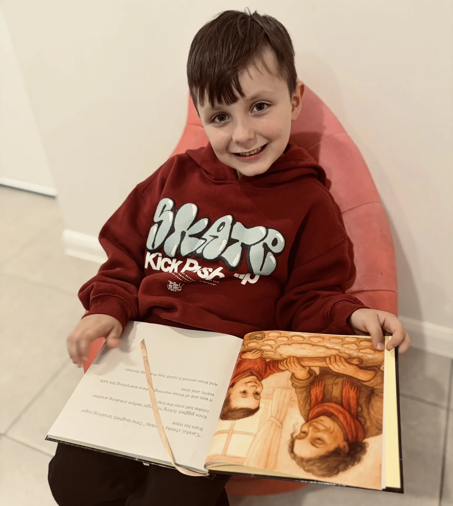
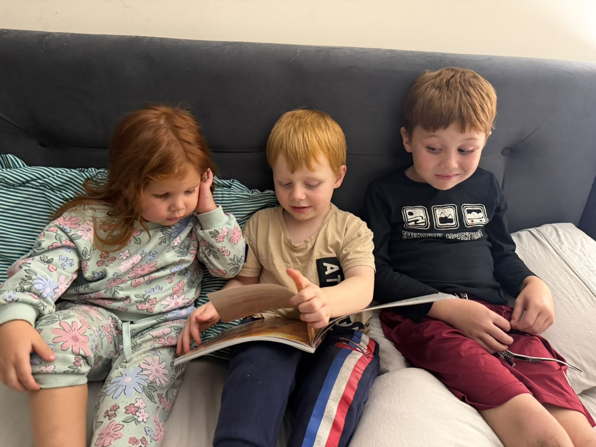
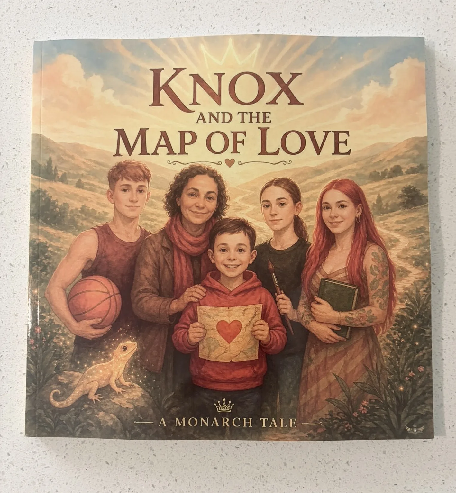
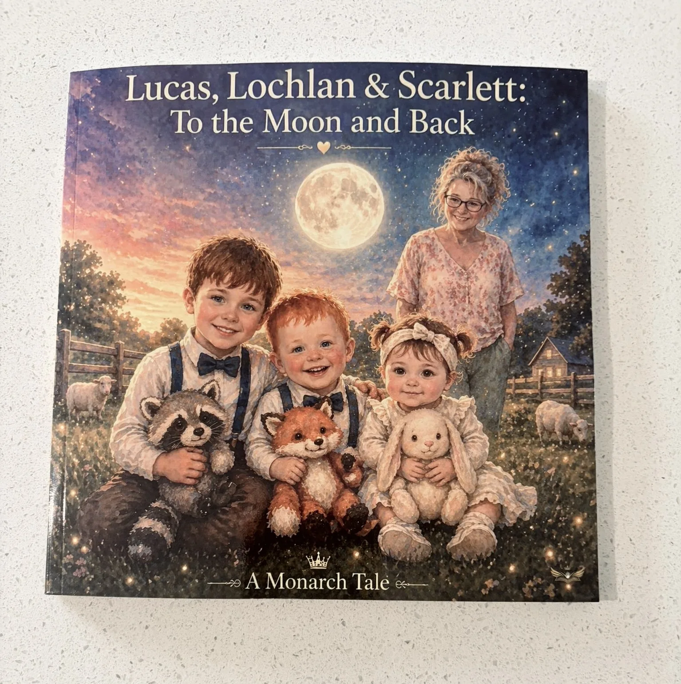
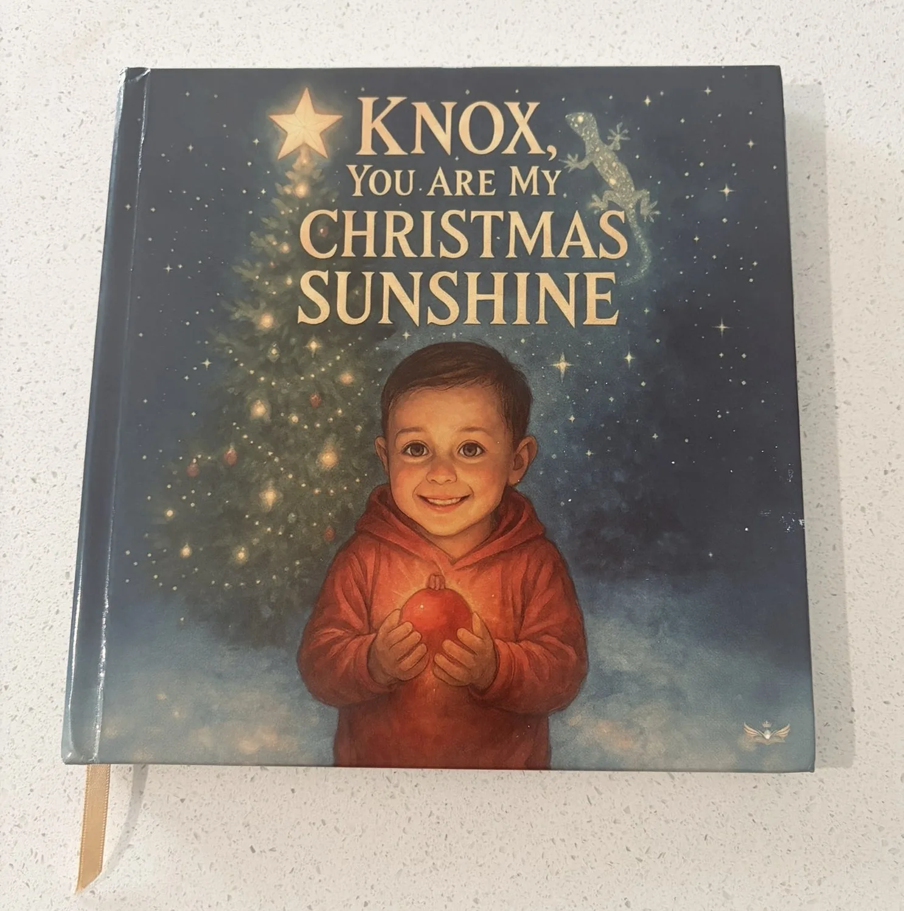

Introduce your family
A short application, with no payment or children's photos needed at this stage.
A personalised illustrated hardcover book, created around your child's personality, memories, relationships and family traditions—not simply their name added to an existing story.


The little sayings, familiar faces and everyday adventures that make your family yours—gathered into a book you can return to together.
Explore the Founding Families editionPhotographs capture what life looked like. Stories preserve what it felt like.
Childhood rarely announces the moments that will matter most. A familiar phrase. A bedtime routine. The way siblings make each other laugh. The person a child reaches for when they need comfort.
Monarch Tales gathers those details and turns them into something a family can hold: a beautifully made story in which children feel genuinely known.
The outcome is simple: “My child was truly seen.”
The strongest proof of Monarch Tales is the finished keepsake and the child who recognises himself inside it.




Explore real printed covers. Your family's story and illustrations are individually created.



Every stage has a clear purpose, so you always understand what happens next.
A short application, with no payment or children's photos needed at this stage.
If accepted, we confirm scope, timing and payment before shaping your story through agreed review stages.
You approve the book before printing. After final approval and balance, it is printed and delivered.
Prince Francix founded Monarch Tales with a simple realisation: photographs preserve what childhood looked like, but stories preserve what childhood felt like.
Prince leads this Australian-registered family-memory company with one purpose—to preserve the little phrases, traditions, routines and everyday moments time quietly takes away.
There are things about a child you think you'll remember forever… And then one day, you don't.
The way they pronounce certain words. The little things they always ask for. How they run to the door when someone they love comes home. Their favourite songs. Even the way their personality changes as they grow.
We take so many photographs of our children. And those photographs matter. But I realised something. Photographs preserve what childhood looked like. Stories can preserve what childhood felt like.
That's why I started Monarch Tales. We listen to families. We learn about their children's personalities, little sayings, relationships, routines and memories. And we turn those real details into illustrated stories their families can keep.
Because one day, this child won't be this little anymore. And I want a parent to open their child's story years from now and say: “Yes. This was them. This was us. This was that season.” If there's a season of your child's life you want to keep, we'd love to hear their story.
Twenty families will help Monarch Tales refine the experience that will eventually serve thousands more.
Applications are accepted continuously. Production takes place in carefully managed batches, with one or two families active at a time initially.
A$112.50 deposit · A$112.50 after creative approval, before printing. No payment today.
Final customer price including standard shipping within Australia. Delivery availability is confirmed after application.
“A beautiful personalised book that makes children feel special and encourages a love of reading.”Maddison, Australia · Real family review
The Founding Families process is designed to feel personal without ever feeling uncertain.
You apply for a Founding Family place. We review your application, confirm story scope, capacity and supported delivery, then invite accepted families into private onboarding. Payment is not taken during the public application.
Yes. Names are only a small part of the work. The story is shaped around personality, relationships, traditions, real memories and the emotional message your family wants to preserve.
Characters are carefully created storybook interpretations inspired by your photographs. They are not photographic portraits. You approve the initial character direction before full scene production.
Yes. Monarch Tales can centre siblings or twins together and preserve the individual personality and role each child brings to the family.
The Founding Families Legacy Edition includes one consolidated story-review round and two consolidated illustration-correction rounds. Complete redesigns after character approval are not included.
Delivery is available to supported regions in Australia, the United States, Canada and the United Kingdom. Availability and standard delivery are confirmed before private onboarding.
“This book made me realise just how important it is to preserve these precious memories of my children at this stage of their lives. They are growing so quickly, and one day, when they are old enough to read and truly understand, these pages will tell the beautiful stories of their toddler years.”
Her children were excited to recognise themselves in the story, and one of the family’s favourite chapters preserved their memories of driving to church and being together there.
Apply for one of twenty Founding Family places. There is no payment during the application stage.